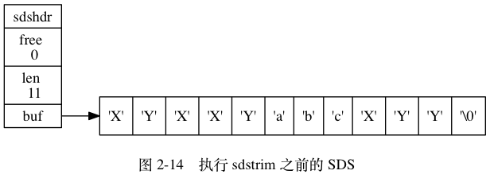

《惰性空间释放》一节对 sdstrim 函数作用的描述有误， 正确的描述应该为：
sdstrim
举个例子， sdstrim 函数接受一个 SDS 和一个 C 字符串作为参数， 从 SDS 左右两端分别移除所有在 C 字符串中出现过的字符。
其中加粗部分为改正后的内容。
因为这个错误， 图 2-14 也要进行相应的改正， 以下是改正后的图 2-14 。

感谢 xiaolou 反馈这个错误。
表 2-2 中对 sdstrim 的描述和时间复杂度都有误， 以下是修正后的内容：
M
N
感谢 xiaolou 、袁文清 反馈这个错误。